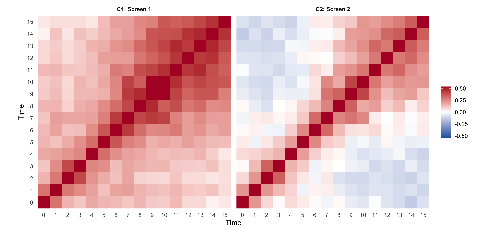
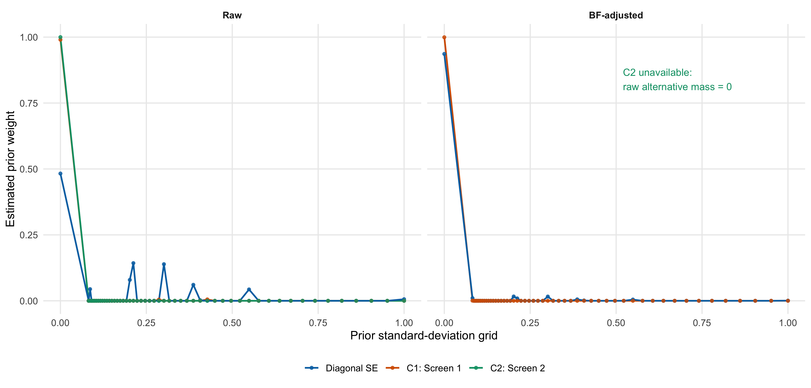
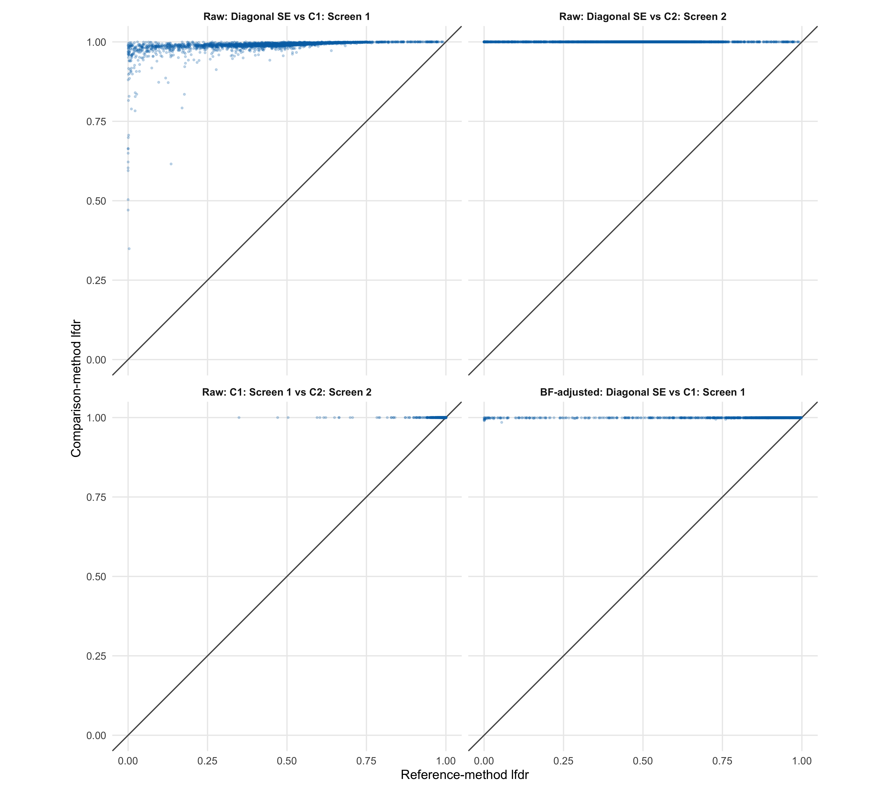
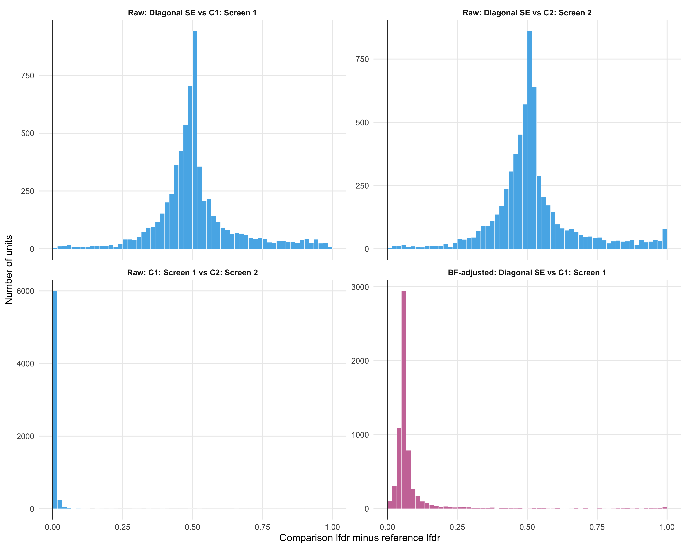
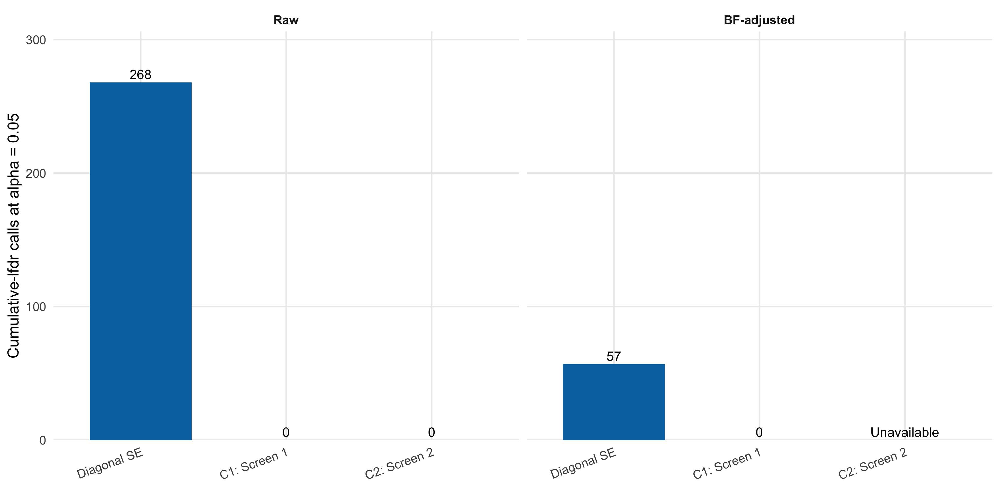

Last updated: 2026-08-07
Checks: 6 1
Knit directory: coderepo-local/
This reproducible R Markdown analysis was created with workflowr (version 1.7.2). The Checks tab describes the reproducibility checks that were applied when the results were created. The Past versions tab lists the development history.
The R Markdown is untracked by Git. To know which version of the R
Markdown file created these results, you’ll want to first commit it to
the Git repo. If you’re still working on the analysis, you can ignore
this warning. When you’re finished, you can run
wflow_publish to commit the R Markdown file and build the
HTML.
Great job! The global environment was empty. Objects defined in the global environment can affect the analysis in your R Markdown file in unknown ways. For reproduciblity it’s best to always run the code in an empty environment.
The command set.seed(20251109) was run prior to running
the code in the R Markdown file. Setting a seed ensures that any results
that rely on randomness, e.g. subsampling or permutations, are
reproducible.
Great job! Recording the operating system, R version, and package versions is critical for reproducibility.
Nice! There were no cached chunks for this analysis, so you can be confident that you successfully produced the results during this run.
Great job! Using relative paths to the files within your workflowr project makes it easier to run your code on other machines.
Great! You are using Git for version control. Tracking code development and connecting the code version to the results is critical for reproducibility.
The results in this page were generated with repository version 9fbd863. See the Past versions tab to see a history of the changes made to the R Markdown and HTML files.
Note that you need to be careful to ensure that all relevant files for
the analysis have been committed to Git prior to generating the results
(you can use wflow_publish or
wflow_git_commit). workflowr only checks the R Markdown
file, but you know if there are other scripts or data files that it
depends on. Below is the status of the Git repository when the results
were generated:
Ignored files:
Ignored: .DS_Store
Ignored: .Rhistory
Ignored: .Rproj.user/
Ignored: analysis/.DS_Store
Ignored: analysis/.Rhistory
Ignored: analysis/figure/
Ignored: analysis/site_libs/
Ignored: code/.DS_Store
Ignored: code/.Rhistory
Ignored: data/appendixB/
Ignored: data/dynamic_eQTL_real/
Ignored: data/revision_simulations/
Ignored: data/toy_example/
Ignored: output/dynamic_eQTL_real/
Ignored: output/pdf/
Ignored: output/revision_simulations/
Untracked files:
Untracked: Rplots.pdf
Untracked: analysis/revision_balanced_variant_thinning.rmd
Untracked: analysis/revision_combined_spiky_genotype_simulation.rmd
Untracked: analysis/revision_correlated_error_simulation.rmd
Untracked: analysis/revision_functional_testing_simulation.rmd
Untracked: analysis/revision_genotype_level_simulation.rmd
Untracked: analysis/revision_internal_correlated_likelihood_sensitivity.rmd
Untracked: analysis/revision_internal_mashr_mean_z_null_correlation.rmd
Untracked: analysis/revision_internal_observational_null_set_pilot.rmd
Untracked: analysis/revision_internal_one_variant_per_gene_refit.rmd
Untracked: analysis/revision_internal_real_genotype_simulation.rmd
Untracked: analysis/revision_internal_targeted_broad_calibration.rmd
Untracked: analysis/revision_internal_variant_annotation_enrichment.rmd
Untracked: analysis/revision_internal_zero_intercept_correlation.rmd
Untracked: analysis/revision_ld_tagging_switch_example.rmd
Untracked: code/00_eQTLs_CL.R
Untracked: code/01_fash_CL.R
Untracked: code/01_fash_CL.sbatch
Untracked: code/09_penalty_sensitivity.R
Untracked: code/09_penalty_sensitivity.sbatch
Untracked: code/revision_simulations/
Untracked: fash_prior_comparison_order1_after.pdf
Untracked: fash_prior_comparison_order1_after.png
Untracked: fash_prior_comparison_order1_before.pdf
Untracked: fash_prior_comparison_order1_before.png
Untracked: fash_prior_comparison_order2_after.pdf
Untracked: fash_prior_comparison_order2_after.png
Untracked: fash_prior_comparison_order2_before.pdf
Untracked: fash_prior_comparison_order2_before.png
Unstaged changes:
Modified: .gitignore
Modified: analysis/dynamic_eQTL_real.rmd
Modified: analysis/index.Rmd
Modified: analysis/nonlinear_dynamic_eQTL_real.Rmd
Modified: code/README.md
Modified: output/toy_example/toy_example_11.pdf
Modified: output/toy_example/toy_example_12.pdf
Modified: output/toy_example/toy_example_21.pdf
Modified: output/toy_example/toy_example_22.pdf
Note that any generated files, e.g. HTML, png, CSS, etc., are not included in this status report because it is ok for generated content to have uncommitted changes.
There are no past versions. Publish this analysis with
wflow_publish() to start tracking its development.
On the exact one-random-variant-per-gene subset used to estimate the two empirical time-correlation matrices, how much does the FASH result change if the likelihood uses either matrix instead of conditionally independent time points?
The three raw fits are:
All three fits use the same 6,362 gene–variant pairs, one pair per
gene; the same beta estimates, adjusted standard errors, time grid, PSD
grid, basis settings, and penalty = 10; and differ only in
the likelihood error correlation.
This experiment therefore does not support a robustness claim with respect to C1 or C2. It shows strong sensitivity if either empirical matrix is treated as the true residual correlation. It also does not establish that C1 or C2 is the true residual correlation: both are estimated from selected z-score trajectories in the same observed data and can retain biological signal or selection-induced structure.
The thinning was performed before either screen by drawing one tested variant uniformly within each gene with seed 20260811. The retained universe has exactly 6,362 unique genes and 6,362 unique gene–variant pairs. Thus the comparison changes neither the units nor their order.
C1 and C2 below are the original empirical correlation matrices. Both are positive definite without nearest-PD projection.
render_scrollable_table(
correlation_diagnostics_display,
align = "lrrrr",
minimum_width = "940px"
)plot_correlation_heatmaps()
The two empirical z-score correlation matrices supplied to the sensitivity fits. Both panels use the same off-diagonal color scale.
The matrices are not external controls and are not estimated from independent replicate data. C1 uses a conventional mashr-style maximum-z screen. C2 additionally screens the independence-scaled mean z score. The extra C2 rule removes obvious common effects, but it also conditions on a function of the same time trajectory whose correlation is being estimated.
Let \(\widehat{\boldsymbol\beta}_j\) denote the 16-vector of estimated effects for unit \(j\), and let
\[ D_j=\operatorname{diag}(s_{j1},\ldots,s_{j,16}) \]
contain its time-specific adjusted standard errors. For a shared correlation matrix \(C\), the sensitivity likelihood uses
\[ \widehat{\boldsymbol\beta}_j\mid\boldsymbol\beta_j \sim N\!\left(\boldsymbol\beta_j,\;D_j C D_j\right), \]
or equivalently the unit-specific precision
\[ \Omega_j =\left(D_j C D_j\right)^{-1} =D_j^{-1}C^{-1}D_j^{-1}. \]
The implementation passes this complete \(\Omega_j\) to fashr. Passing
only \(C^{-1}\) would incorrectly
discard the fact that standard errors vary across units and time
points.
correlation_precision <- solve(C)
omega <- lapply(seq_len(nrow(adjusted_se)), function(j) {
inverse_se <- 1 / adjusted_se[j, ]
correlation_precision * tcrossprod(inverse_se)
})
correlated_fit <- fashr::fash(
data = data_list,
Omega = omega,
likelihood = "gaussian",
num_basis = 20,
betaprec = 0,
order = 1,
pred_step = 1,
psd_grid = psd_grid,
penalty = 10
)Before either correlated fit was run, 24 real-data units were evaluated twice: once using the ordinary diagonal-SE path and once using the full-precision path with \(C=I\). The complete 52-component likelihood rows were compared after subtracting each row’s null-component log likelihood, because a component-free row constant cannot affect empirical-Bayes weights or posterior probabilities.
render_scrollable_table(
identity_validation_display,
align = "rrrr",
minimum_width = "980px"
)The agreement is at floating-point precision, confirming that the correlated route reduces to the existing diagonal likelihood when \(C=I\).
render_scrollable_table(
method_stage_summary_display,
align = "llllrrrr",
minimum_width = "1320px"
)The diagonal raw fit reuses the exact selected likelihood rows from the current full-data FASH object and re-estimates the mixture on the thinned universe. The C1 and C2 likelihoods must be recomputed because their precision matrices are non-diagonal. Their elapsed times were approximately 26 and 36 minutes, respectively.
plot_prior_weights()
Estimated prior weights on the common FASH PSD grid. The horizontal axis shows the square root of the PSD-grid value. C2 has no BF-adjusted curve because its raw non-null prior mass is exactly zero.
render_scrollable_table(
prior_pairwise_metrics_display,
align = "llrrrr",
minimum_width = "1160px"
)At the raw stage, the total-variation distance between the diagonal prior and either correlated prior is about 0.517. C1 and C2 themselves are much closer: their prior total-variation distance is about 0.010 because both concentrate almost all mass at the null. BF adjustment reduces the diagonal-versus-C1 prior total variation to about 0.063, but does not make the two fitted analyses equivalent.
plot_lfdr_comparisons()
Paired unit-level lfdr values. Each panel uses exactly the same 6,362 gene-variant pairs. C2 raw lfdr is identically 1; C2 BF is unavailable.
render_scrollable_table(
lfdr_pairwise_metrics_display,
align = "llrrrrrrrr",
minimum_width = "1660px"
)For raw diagonal versus C1, the lfdr Spearman correlation is 0.773 but the mean absolute difference is 0.508: ranking is partly retained while absolute calibration shifts sharply toward the null. Because C2 raw lfdr is constant at 1, Pearson and Spearman correlations with C2 are undefined rather than zero.
After BF adjustment, diagonal versus C1 has Spearman correlation 0.789 and mean absolute difference 0.089. Thus BF adjustment substantially reduces the average lfdr displacement, but it does not restore the diagonal discoveries: C1 still makes no calls at the same cumulative-lfdr threshold.
plot_lfdr_difference_distributions()
Distributions of paired lfdr differences. Positive values mean that the correlated-likelihood method assigns greater posterior null probability than the reference method.
The following table shows the five largest absolute lfdr changes for each available pairwise comparison. These are paired changes, not a comparison of different sampled variants.
render_scrollable_table(
top_discrepancy_display,
align = "llrllrrr",
minimum_width = "1460px"
)plot_discovery_counts()
Numbers of cumulative-lfdr discoveries at alpha 0.05 on the fixed thinned universe. The C2 BF result is unavailable and is labeled accordingly.
The raw diagonal analysis calls 268 of the 6,362 pairs. Both correlated raw fits call none. The BF-adjusted diagonal analysis calls 57, whereas the available BF-adjusted C1 analysis calls none. Therefore the discovery-set Jaccard is zero for every diagonal-versus-correlated comparison with an available result. C1 and C2 raw both make no calls, so their empty-set Jaccard is defined as one by the analysis code.
The direct empirical finding is clear:
Conditional on treating C1 or C2 as the likelihood’s residual correlation, the fitted null weight, unit-level lfdr calibration, and discovery set change substantially relative to the diagonal analysis. BF adjustment attenuates the average diagonal-versus-C1 lfdr difference, but it does not recover any C1 discoveries.
The causal interpretation is not clear. A null residual-correlation matrix is supposed to describe cross-time dependence in estimation noise conditional on the true trajectory. C1 and C2 are instead empirical correlations of selected observed z-score vectors. Even after one-variant-per-gene thinning and null-like screening, those vectors may contain constant or dynamic effects, gene-specific artifacts, and structure induced by selecting on the same z scores. Supplying such a matrix to the likelihood can make smooth trajectories look more compatible with noise and can absorb signal into the null model.
Accordingly, this page should be read as a stress test of two plausible but not identified covariance inputs, not as evidence that either correlated fit is better calibrated than the diagonal fit.
The analysis cache records immutable input metadata and SHA-256 hashes. Routine page builds validate these recorded values and current file sizes but do not reload the two full FASH objects.
render_scrollable_table(
source_provenance_display,
align = "llrl",
minimum_width = "1760px"
)Routine builds read only:
To rerun the full likelihood analysis without overwriting the retained cache, use a new output ID. On the current machine the two correlated fits together required about 62 minutes with eight cores.
Rscript --vanilla \
code/revision_simulations/internal/correlated_likelihood_sensitivity/run_correlated_likelihood_sensitivity.R \
--num-cores 8 \
--validation-units 24 \
--thinning-seed 20260811 \
--output-id correlated_likelihood_sensitivity_reproductionThe focused tests are:
Rscript --vanilla \
code/revision_simulations/internal/correlated_likelihood_sensitivity/test_correlated_likelihood_helpers.R
Rscript --vanilla \
code/revision_simulations/internal/correlated_likelihood_sensitivity/test_reporting.RThe internal page can be rebuilt from the retained cache with:
Rscript --vanilla -e \
'workflowr::wflow_build(
"analysis/revision_internal_correlated_likelihood_sensitivity.rmd"
)'
sessionInfo()R version 4.5.1 (2025-06-13)
Platform: aarch64-apple-darwin20
Running under: macOS Sequoia 15.6.1
Matrix products: default
BLAS: /System/Library/Frameworks/Accelerate.framework/Versions/A/Frameworks/vecLib.framework/Versions/A/libBLAS.dylib
LAPACK: /Library/Frameworks/R.framework/Versions/4.5-arm64/Resources/lib/libRlapack.dylib; LAPACK version 3.12.1
locale:
[1] C.UTF-8/C.UTF-8/C.UTF-8/C/C.UTF-8/C.UTF-8
time zone: America/Chicago
tzcode source: internal
attached base packages:
[1] stats graphics grDevices utils datasets methods base
other attached packages:
[1] workflowr_1.7.2
loaded via a namespace (and not attached):
[1] gtable_0.3.6 jsonlite_2.0.0 dplyr_1.1.4 compiler_4.5.1
[5] promises_1.5.0 tidyselect_1.2.1 Rcpp_1.1.1-1.1 stringr_1.6.0
[9] git2r_0.36.2 dichromat_2.0-0.1 callr_3.7.6 later_1.4.4
[13] jquerylib_0.1.4 scales_1.4.0 yaml_2.3.12 fastmap_1.2.0
[17] ggplot2_4.0.1 R6_2.6.1 labeling_0.4.3 generics_0.1.4
[21] knitr_1.50 tibble_3.3.0 rprojroot_2.1.1 RColorBrewer_1.1-3
[25] bslib_0.9.0 pillar_1.11.1 rlang_1.2.0 cachem_1.1.0
[29] stringi_1.8.7 httpuv_1.6.16 xfun_0.55 S7_0.2.1
[33] getPass_0.2-4 fs_1.6.6 sass_0.4.10 otel_0.2.0
[37] cli_3.6.6 withr_3.0.2 magrittr_2.0.5 ps_1.9.1
[41] grid_4.5.1 digest_0.6.39 processx_3.8.6 rstudioapi_0.17.1
[45] lifecycle_1.0.5 vctrs_0.7.3 evaluate_1.0.5 glue_1.8.1
[49] farver_2.1.2 whisker_0.4.1 rmarkdown_2.30 httr_1.4.7
[53] tools_4.5.1 pkgconfig_2.0.3 htmltools_0.5.9